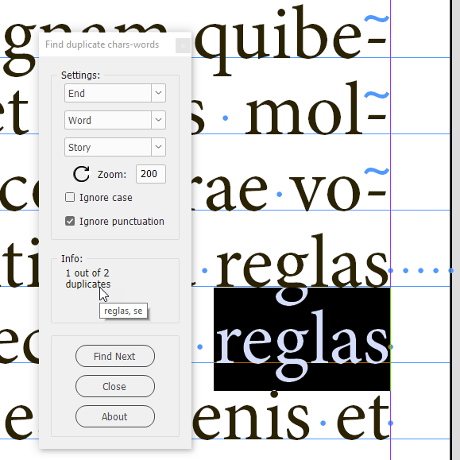
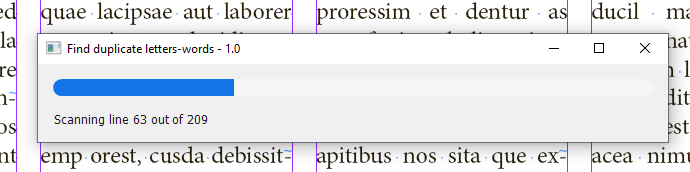
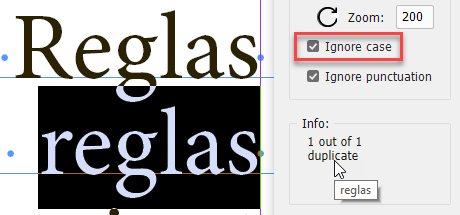
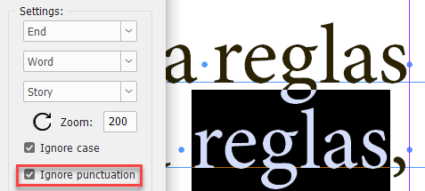
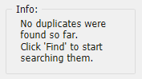
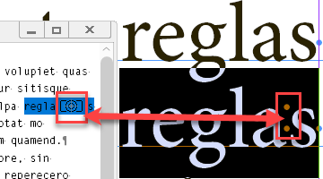
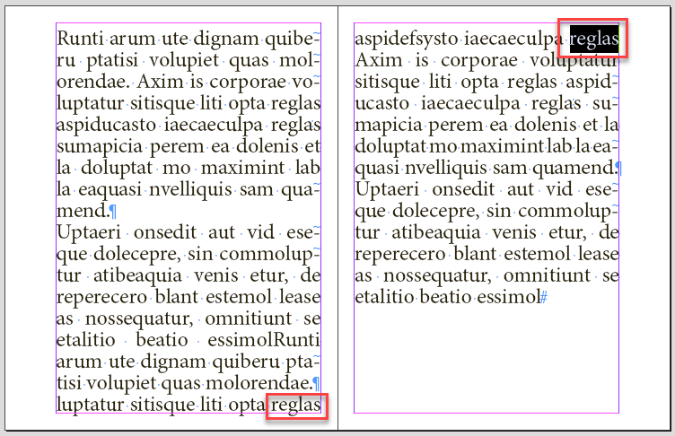
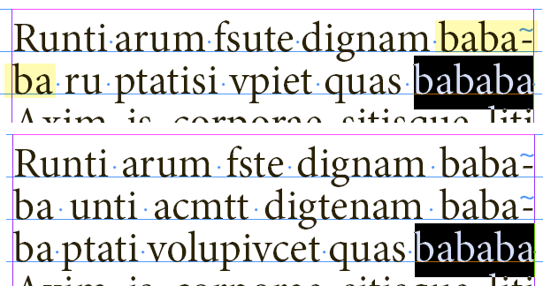
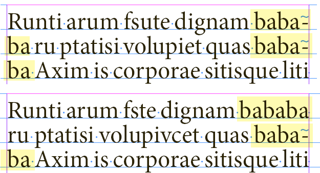
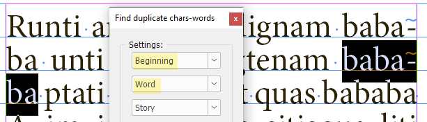

Find duplicate characters/words at the beginning/end of lines
This script is still an ongoing and crowd-funding project: written and tested in InDesign 2024 on Windows 10 by Kasyan. The first beta version — 1.1.
Visually, it resembles the Find Text in Location script and works similarly but it is a different script written almost from scratch. It imitates InDesign’s find-change dialog box: you start the script and using its panel (a non-modal dialog box) you can find identical characters or words (duplicates) at the beginning/end of lines which is impossible to do in InDesign.

How it works:
After running the script, the panel pops up. Select a story or some text in the document, the necessary settings in the dialog box and click the Find button. The script scans the lines. With a large text, it may take a long so a progress bar appears to indicate advancement. For example, on my old home computer with Windows 10 installed, it takes almost 5 minutes to scan a test document: 10 pages x 4 columns filled with 12 pt text (51,000 characters, 2,160 lines). In my opinion, performance is the major problem at the moment, but I see a way to improve it and I will get down to solving it if time permits and the project is supported financially.

Then, if duplicates are found, the script selects the first one, and the button changes to Find Next. Note: it selects the last instance of two or more dups in a row. The Info panel displays the current dupe number out of the total number found. If you hover the cursor over the area, the list of dupes is displayed. The script ignores spaces — there can be one or more as you can see on the screenshot above — and paragraph/forced line breaks (hard/soft returns) at the end of a line.
Settings
In the topmost dropdown list, you select the location on the line:
- Beginning
- End
In the second list, you select what to find:
- Word
- Character
The third list — What should be processed — defines the scope of your search:
- Selected story
- Selected text
Before hitting the Find button you should indicate which text/story to process by selecting some text or a text frame. For Story, you can also place the cursor into the text. If the text frame has linked frames, all of them — the whole story — will be processed.
You can set the zoom level for displaying the found text in the Zoom field. Left to it, there’s the Reset button —  — which acts as if you close and rerun the script. Use it when you switch to, or open another document, start searching again, and probably in some other cases: more testing is needed.
— which acts as if you close and rerun the script. Use it when you switch to, or open another document, start searching again, and probably in some other cases: more testing is needed.
The Ignore case check box
As the name suggests, if it is on, the script makes searches ignoring the case, like so:

The Ignore punctuation check box
If it is on, the script ignores punctuation marks at the beginning and end of lines. Note, here on the screenshot, the comma, on the second line, was ignored and the word was selected before it.

Currently, by punctuation marks I mean the following:
At the beginning
¿ ¡ (inverted question & exclamation marks — maybe useful in Spanish — but I don’t know this language)
• bullet
( — opening parenthesis
[ — opening square bracket
At the end
. — dot
, — comma
? — question mark
! — exclamation mark
: — colon
; — semicolon
- — dash
) — closing parenthesis
] — closing square bracket
They are defined in the gPuncMarksBegPatt and gPuncMarksEndPatt variables (regular expressions) at the top of the script. Feel free to add more, if a need arises.
The Info panel
displays current information/instructions regarding the script operation

The Close button, as the name suggests, closes the dialog box and quits the script.
The About button leads you to this page. Make sure to hit it from time to time to check if a new version is available.
Technical details
The script ignores special characters that have the following Unicode values:
- FEFF (65279) — hyperlink anchor, index marker
- FFFC (65532) — anchored object

I haven’t tested it with other ones: maybe I will add some more in the future.
The script displays dups even when they are split between columns/pages. For example, here one appears at the bottom of the verso and another on top of the recto:
I think it makes sense because the text may reflow so they would move somewhere to the middle of the text.

If the ‘words at the end of the line’ is chosen, the script skips duplicates where the last instance is automatically hyphenated. For example, this is found:

But this isn’t:

All the settings you make in the panel and its location on the screen are stored on closing.
You can change its size — width (the first value) and height (the second value) — by editing this line in the script:
gInfo.preferredSize = [110, 60];
Found issues
If the ‘words at the beginning of the line’ is chosen, the script selects an automatically hyphenated word since, indeed, the word appears both at the end of the previous and the beginning of the next line.

In a future version, it makes sense to check if such a word is hyphenated as I did at the end of the line, but now my time is up and I don’t want to break accidentally what already works.
This is the very first version and I see more space for improvement so I left some debugging stuff in the code which should not interfere with performance when the script is used in a regular way (as downloaded): with debug and log variables set to false.
If you found this script useful and want me to develop it further, consider supporting me by donating via PayPal directly to my e-mail: askoldich [at] yahoo [dot] com. (Due to PayPal's restrictions for Ukraine, I can't have a Donate button on my site.)
Click here to download the script.
See also Find Text in Location